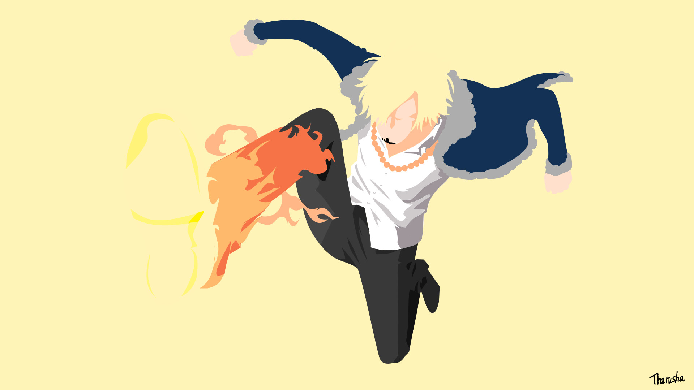
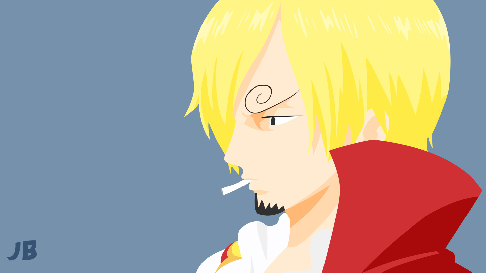

ONE PIECE
Roronoa Zoro
Monkey D. Luffy
Sanji Vinsmoke
(current)
Portgas D. Ace


Enfance
Sanji est né le même jour que ses frères Ichiji, Niji et Yonji , dans le royaume des Germa, sur North Blue. Il est le fils de Judge Vinsmoke, noble déchu et scientifique ayant travaillé avec Végapunk.
Manga D'origine Japonaise